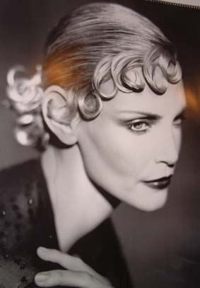

Bemutatkozás

A FODOR & BODOR FODRÁSZAT Magyarországon egy frekventált helyen igényesen kialakított üzletben található.
A fodrászhelyiség 45 m2 alapterületen 5 munkaasztalos szoba. Az üzletben 5 fodrász dolgozik, a hét minden napján kétműszakos munkarendben.
Szombati napon a nyitvatartás igény szerint megoldható!
A fodrászoknak munkájuk során széles vendégkört sikerült kiépíteniük. Vendégeik minden korosztályból kerülnek ki. Az állandó vendégkör mellett jönnek újabb vendégek, fiatalok és idősebbek is egyaránt.
A vendégek a kívánt frizurát divatkatalógusokból, újságokból választhatják ki, de spontán is közölhetik igényeiket. A frizurák és az arcápolás mellett nagy hangsúlyt fordítanak a vendégekkel való kellemes beszélgetésekre is.